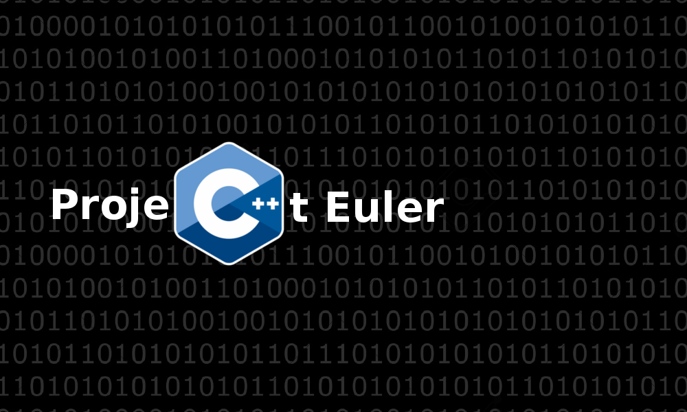

Project Euler
Project Euler is a large collection of programming challenges, generally involving advanced math concepts. These programs can be completed in any language, so I decided to go with my favorite - C++
I'd highly recommend you try some of these problems if you haven't already - they're a lot of fun, and you can learn a lot about math theories and brilliant mathematicians.

- Year: 15
- Program: Open Source
- Category: Programming